Rishit Dagli
Date: October 2022
These are my notes for the seminars that happen in the Theory Group at The University of Toronto. Many thanks to Professor Allan Borodin for allowing me to attend the Theory Group seminars and helping out. An online version of these notes are available at https://rishit-dagli.github.io/cs-theory-notes.
The Theory Group focuses on theory of computation. The group is interested in using mathematical techniques to understand the nature of computation and to design and analyze algorithms for important and fundamental problems.
The members of the theory group are all interested, in one way or another, in the limitations of computation: What problems are not feasible to solve on a computer? How can the infeasibility of a problem be used to rigorously construct secure cryptographic protocols? What problems cannot be solved faster using more machines? What are the limits to how fast a particular problem can be solved or how much space is needed to solve it? How do randomness, parallelism, the operations that are allowed, and the need for fault tolerance or security affect this?
7th October 2022
The related paper: Combinatorial lower bounds for 3-query LDCs by Alrabiah et al. (1). Seminar by Peter Manohar. (2)
A code 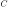 is a q-locally decodable code (q-LDC) if one can recover any chosen bit 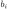 of the 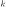-bit message b with good confidence by randomly querying the 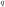-bit encoding x on at most coordinates. Existing constructions of  -LDCs achieve blocklength
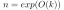, and lower bounds show that this is in fact tight. However, when 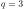, far less is known: the best constructions have
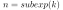, while the best known lower bounds, that have stood for nearly two decades, only show a quadratic lower bound of
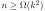 on the blocklength.
-LDCs achieve blocklength
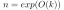, and lower bounds show that this is in fact tight. However, when 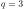, far less is known: the best constructions have
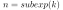, while the best known lower bounds, that have stood for nearly two decades, only show a quadratic lower bound of
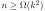 on the blocklength.
In this talk, we will survey a new approach to prove lower bounds for LDCs using recent advances in refuting semirandom instances of constraint satisfaction problems. These new tools yield, in the 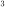-query case, a near-cubic lower bound of 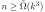, improving on prior work by a polynomial factor in .
Take codes 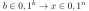
Codes  are read by the decoder, 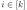,
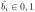
are read by the decoder, 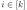,
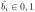
with
 ,
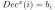 w.p.
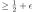 for any 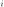.
,
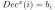 w.p.
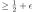 for any 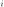.Ask the question, what is the best possible rate for a -LDC given a ?
| Lower Bound | Upper Bound | |||
| 2 | 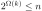 | 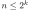 | ||
| 3 |
 |
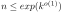 | ||
| 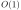, even | 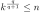 | |||
| , odd | 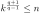 |
Focus on the case , we have gotten better bounds:
 |
(1) |
In (1), they show that a better minimum bound can be found than these existing ones for :
| 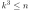 | (2) |
The main result is that:
Semi-random CSP refutation comes to our aid to prove this! The intuitive way to put this theorem is that -LDC lower bound is same as refuting "LDC" -XOR.
The idea:
We can see that the decoder we have can arbitrary but WLOG we can assume there are -unif hypergraphs
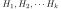 where every  is such that:
is such that:
| 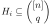 |
We can also see that:
Each is a matching such that
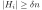
and, 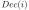 picks
and outputs
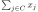
One such example is the Hadmard code:
| (3) |
Can think of this as 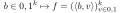 and 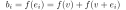 are connected.
Matching vector codes are 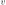
We suppose that our code is linear and that there exists -unif hypergraphs
.
We also know that:
Each is a matching such that
and, picks
and outputs
So, we start by considering a -XOR instance 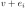:
| 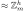 |
We can write down the maximum fraction of satisfiable constraints:
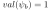 for any
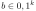.
It is sufficient now if we can argue that is unsat w.h.p. for some random when
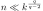.
Now we need to refute XOR, there are many ways to argue unsatisfiability of an XOR instance. One reason why we can not use probablistic approaches here is that only has bits of randomness.
One way we can have some success here is to use a refutation algorithm
With this the guarantee then would be
which is similar to saying that if
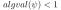 then 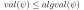 refutes 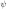. The ideal goal would be to refute random with  constraints w.h.p.
constraints w.h.p.
However, we take a look at semi-random XOR. Our refutation algorithm and the guarantee will still be the same:
with the guarantee that
.
So, now we generate semi-random constraints:
The equation we have is:
| (4) |
And we also already know that
And, 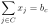.
is almost semi-random.
Thus, we have shown 1.3 Part 1 of Proof.
This document was generated using the LaTeX2HTML translator Version 2019.2 (Released June 5, 2019)
The command line arguments were:
latex2html -t 'Theory Group Seminar Notes' -split 0 main.tex
The translation was initiated on 2022-10-11